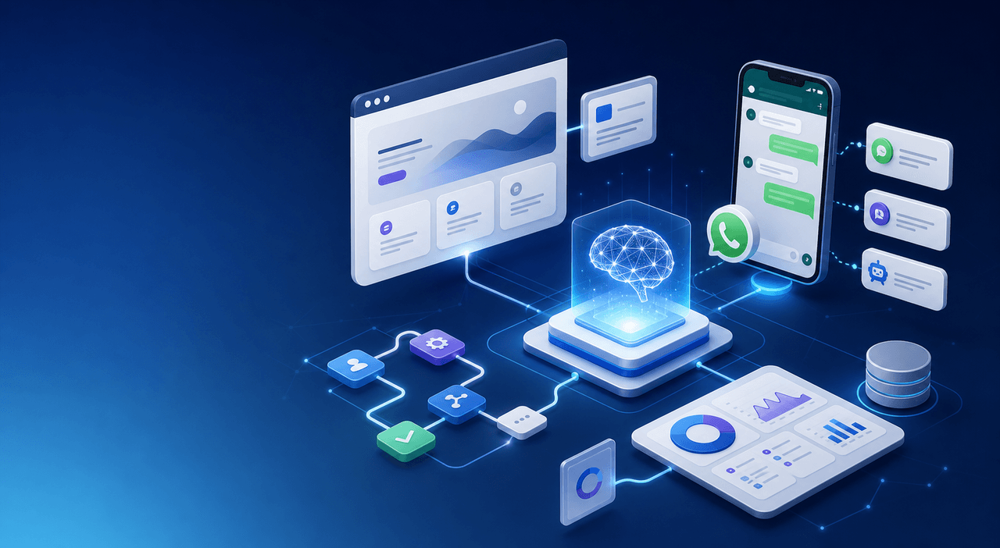

Criação de sites e landing pages
Páginas profissionais, rápidas e preparadas para transformar visitantes em contatos.
IA prática para negócios reais
Sites, atendimento pelo WhatsApp, mensagens automáticas e sistemas simples para vender mais, atender melhor e economizar tempo.

Serviços
Projetos enxutos, objetivos e pensados para o dia a dia de quem precisa ganhar tempo sem depender de ferramentas complexas.
Páginas profissionais, rápidas e preparadas para transformar visitantes em contatos.
Fluxos de conversa para responder dúvidas, qualificar clientes e iniciar vendas.
Rotinas automáticas para reduzir tarefas repetitivas e melhorar o tempo de resposta.
Conexão entre sistemas, formulários, planilhas, CRMs, pagamentos e ferramentas online.
Aplicações simples para cadastro, pedidos, agenda, controle e acompanhamento interno.
Vitrine online para produtos e serviços com contato rápido pelo WhatsApp.
Painéis para acompanhar vendas, atendimentos, pedidos e indicadores importantes.
Mapeamento de oportunidades reais para aplicar IA com retorno prático.
Benefícios
A proposta é simples: tirar peso da rotina, deixar a operação mais organizada e criar caminhos claros para novos clientes chegarem até você.
Quero automatizar meu atendimentoAtendimento mais rápido
Redução de tarefas manuais
Mais organização
Mais vendas pelo WhatsApp
Presença digital profissional
Soluções sob medida
Uso prático de inteligência artificial
Como funciona
Conversamos sobre o problema, rotina, público, ferramentas usadas e objetivo comercial.
Definimos a melhor abordagem, escopo inicial, prazos e o caminho mais simples para começar.
A solução é construída em ciclos curtos, com testes e ajustes antes da entrega final.
Você recebe orientação para usar a solução e suporte para evoluir quando fizer sentido.
Exemplos de soluções
Alguns formatos que podem ser adaptados para lojas locais, condomínios, prestadores de serviço, infoprodutores e empresas com atendimento via WhatsApp.
Triagem de clientes, respostas frequentes e encaminhamento para atendimento humano.
Presença profissional com chamada direta para contato, orçamento ou agendamento.
Registro, status, histórico e acompanhamento de pedidos em uma tela simples.
Produtos e serviços organizados em uma vitrine fácil de enviar para clientes.
Lembretes, confirmações, pós-venda e comunicação recorrente com menos trabalho manual.
Indicadores visuais para entender demandas, desempenho e oportunidades de melhoria.
Próximo passo
Explique sua necessidade e receba uma sugestão de solução personalizada.
FAQ
Respostas rápidas para quem quer começar com clareza e sem travar na parte técnica.
Não. A ideia é traduzir sua necessidade em uma solução simples de usar no dia a dia.
Sim. Cada projeto parte da rotina, objetivo e ferramentas que o negócio já utiliza.
Sim. Muitas soluções começam com uma landing page, um formulário ou uma automação pequena.
Sim. O WhatsApp pode ser usado como canal principal para captação, atendimento e vendas.
Sim. A entrega pode incluir orientação de uso, ajustes e suporte conforme o combinado.
Na maioria dos casos, sim. O ponto é escolher uma aplicação prática: atendimento, conteúdo, análise, organização ou automação.